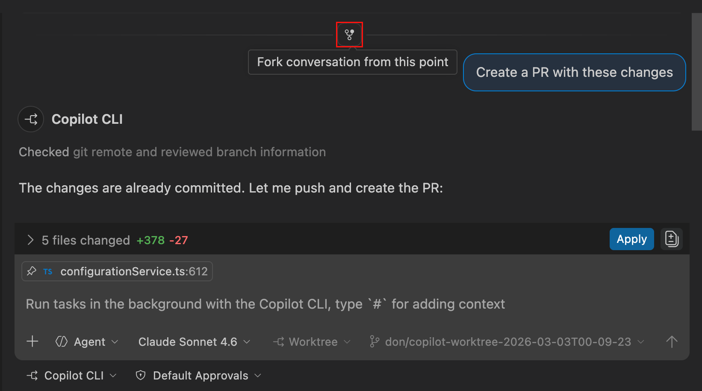
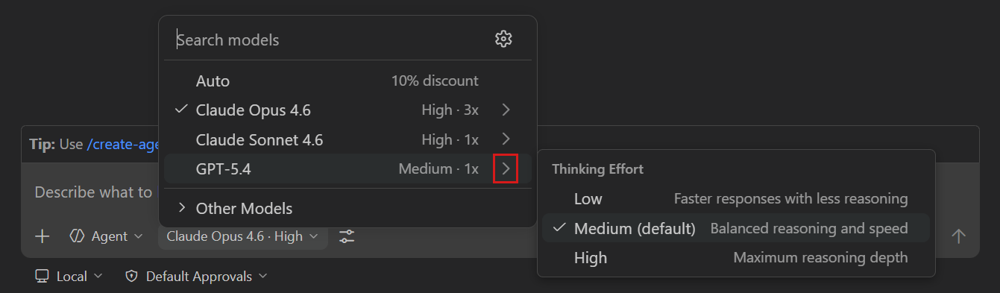
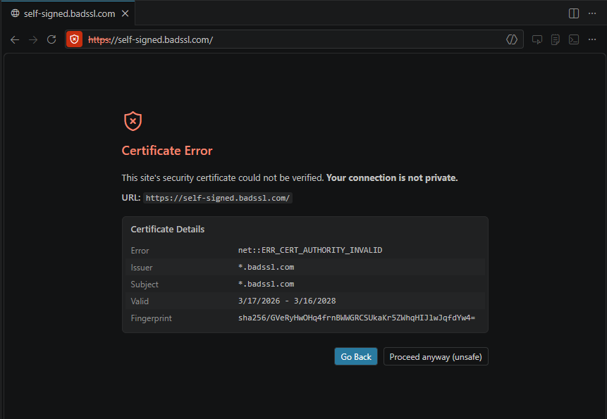
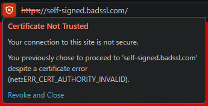
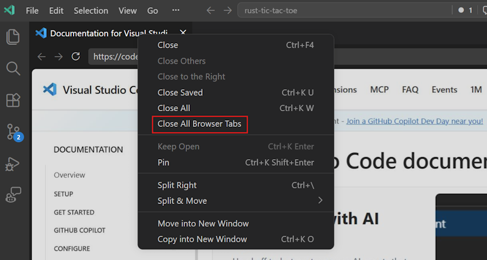
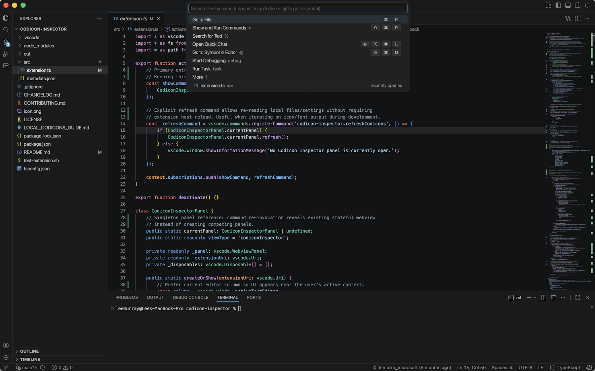
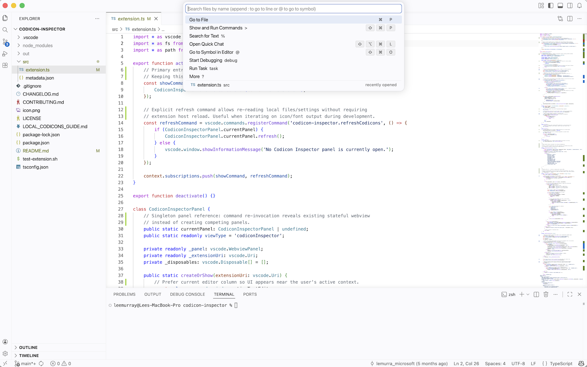

Visual Studio Code 1.113
_发布日期：2026 年 3 月 25 日_
欢迎阅读 Visual Studio Code 1.113 版本发布说明。此版本在 智能体和开发者体验 方面带来了多项改进。
- Chat 自定义：通过一个统一界面管理所有聊天相关的自定义设置。
- 可配置的思考程度：直接从界面中控制模型的推理级别。
- 嵌套子智能体：允许子智能体调用其他子智能体以完成复杂的多步骤工作流。
- CLI 智能体能力：在 CLI 智能体中使用 MCP 服务器、派生会话和查看调试日志。
- 图片预览：使用功能齐全的图片查看器预览聊天中的图片。
- 默认主题焕新：享受更新后的默认浅色和深色主题带来的全新外观。
祝编码愉快！
VS Code 正在逐步向所有用户推送。使用 VS Code 中的 检查更新 可立即获取最新版本。
若要尽快尝试新功能，请下载每日 Insiders 预览版本，其中包含最新的更新内容。
智能体体验
在本地、CLI 和 Claude 智能体中使用相同的工具和工作流，并以更少的摩擦组合多步骤自动化。
Copilot CLI 和 Claude 智能体中的 MCP 支持
此前，你在 VS Code 中配置的 MCP 服务器仅适用于在编辑器中运行的本地智能体。此版本新增了对 Copilot CLI 和 Claude 智能体中 MCP 服务器的支持。
你在 VS Code 中注册的 MCP 服务器会桥接到 Copilot CLI 和 Claude 智能体。这适用于用户定义的服务器以及通过 mcp.json 文件在工作区中定义的服务器。
了解更多关于在 VS Code 中使用 MCP 服务器的信息。
在 Copilot CLI 和 Claude 智能体中派生会话
设置: setting(github.copilot.chat.cli.forkSessions.enabled)
派生会话使你能够在对话历史中的任意位置创建现有会话的副本。当你想要探索不同的思路或尝试不同的提示词，同时又不想丢失原始会话的上下文时，这一功能非常有用。

从此版本开始，你现在也可以在 Copilot CLI（实验性）和 Claude 智能体中派生会话。若要为 Copilot CLI 启用派生功能，请启用 setting(github.copilot.chat.cli.forkSessions.enabled) 设置。
在文档中了解更多关于派生聊天会话的信息。
Copilot CLI 和 Claude CLI 会话的智能体调试日志（预览）
智能体调试日志面板是了解发送提示词后发生了什么的主要工具。它按时间顺序显示聊天会话期间智能体交互的事件日志。现在，你可以将智能体调试日志面板用于 Copilot CLI 和 Claude 智能体会话。对本地智能体会话的支持此前已提供。

在我们的文档中了解更多关于智能体调试日志面板的信息。
基于 SDK API 的 Claude 会话列表
VS Code 现在采用 Claude 智能体 SDK 的官方 API 来列出会话及其消息。此前，我们依赖于解析磁盘上的 Claude JSONL 文件，这存在与 Claude 结构变化不同步的风险。如果你曾遇到 Claude 智能体未显示所有会话或消息的问题，现在应该已经解决。
嵌套子智能体
设置: setting(chat.subagents.allowInvocationsFromSubagents)
子智能体现在可以调用其他子智能体，从而实现更复杂的多步骤工作流。此前，为防止无限递归，子智能体被限制不能调用其他子智能体。通过新的 setting(chat.subagents.allowInvocationsFromSubagents) 设置，你可以在需要时启用此功能。
在文档中了解更多关于使用子智能体的信息。
管理插件市场
我们新增了一个命令 Chat: 管理插件市场，该命令列出了所有已配置的插件市场。对于每个市场，你可以浏览其插件、打开它们的本地目录并删除它们。
在文档中了解更多关于使用智能体插件的信息。
插件安装的 URL 处理器
你可以通过 URL 处理器触发 VS Code 插件安装。要安装一个市场，你可以触发以下格式的链接：
vscode://chat-plugin/add-marketplace?ref=<source>其中 "source" 是 GitHub 的 repo/owner 或 base64 编码的 Git URI。要安装一个扩展，你可以使用以下格式：
vscode://chat-plugin/install?source=<source>若要针对 VS Code Insiders，请将 URL 中的 vscode 替换为 vscode-insiders。
聊天体验
通过一个统一的编辑器为你的项目定制 AI，控制模型在回复前的推理程度，以及在聊天中查看视觉上下文。
Chat 自定义编辑器（预览）
Chat 自定义编辑器提供了一个集中化的界面，用于在一个地方创建和管理所有的聊天自定义设置。该编辑器将自定义类型组织到不同的选项卡中，如自定义指令、提示词文件、自定义智能体和智能体技能。它还提供了一个带有语法高亮和验证功能的嵌入式代码编辑器。
你可以从头开始创建新的自定义设置，或使用 AI 基于你的项目生成初始内容。要添加 MCP 服务器和智能体插件，可以直接从编辑器中浏览相应的市场。
要打开此编辑器，请在聊天视图中选择 配置聊天（齿轮图标），或从命令面板 (kb(workbench.action.showCommands)) 中运行 Chat: 打开 Chat 自定义。
在文档中了解更多关于 Chat 自定义编辑器的信息。
模型选择器中可配置的思考程度
支持推理的模型（如 Claude Sonnet 4.6 和 GPT-5.4）现在会直接在模型选择器中显示一个 思考程度 子菜单。你可以使用它来控制模型对每个请求应用的推理程度，而无需进入 VS Code 设置。VS Code 会按模型保留所选的努力级别设置，跨对话保持生效。
在选择器中选择一个推理模型，然后选择箭头以显示可用的努力级别。可用的努力级别可能因模型而异。非推理模型不会显示子菜单。

模型选择器标签现在也会显示所选的努力级别，例如"GPT-5.3-Codex · 中"，以便更容易查看每个模型当前激活的努力级别。
在文档中了解更多关于思考程度和推理的信息。
注意：setting(github.copilot.chat.anthropic.thinking.effort)和setting(github.copilot.chat.responsesApiReasoningEffort)设置已被弃用。推理努力级别现在直接通过模型选择器进行配置。
聊天附件的图片预览
设置: setting(imageCarousel.chat.enabled)、setting(imageCarousel.explorerContextMenu.enabled)
当你在聊天中处理图片时，无论是将截图附加到请求中，还是智能体通过工具调用生成图片，你现在都可以选择任何图片附件，在完整的图片查看器体验中打开它。
该查看器以模态叠加层形式打开，并支持：
- 导航：使用箭头按钮、键盘方向键或底部的缩略图条浏览当前聊天会话中的所有图片。
- 分区：图片按对话轮次分组，因此你可以查看哪些图片来自特定请求或响应。
- 缩放和平移：单击放大，使用
kbstyle(Option+Click)（Mac）或kbstyle(Ctrl+Click)（Windows/Linux）缩小，或滚动/捏合进行连续缩放。在高缩放级别下，滚动以平移图片。
图片查看器现在也可从资源管理器视图上下文菜单中用于图片文件。当你选择 在图片预览中打开 时，查看器将打开当前文件夹中的所有图片。
这两项功能默认启用。要分别配置它们，请使用 setting(imageCarousel.chat.enabled) 和 setting(imageCarousel.explorerContextMenu.enabled)。
编辑器体验
在集成浏览器中更有信心地开发和测试 Web 应用，并享受编辑器焕新的默认外观。
在集成浏览器中使用自签名证书
当你开发依赖安全 HTTPS 连接的 Web 应用程序时，通常需要在测试期间使用自签名证书。
在正常情况下，此类证书不应被信任。此前，在集成浏览器中，任何提供不受信任证书的网站都会直接加载失败，没有任何绕过选项。
现在，与大多数浏览器类似，你可以选择临时信任无法验证的证书，以便在这些场景中解除开发阻塞。

当你选择继续后，使用该证书连接到当前主机的连接将被允许一周。URL 栏将显示该连接不安全，并随时提供撤销信任的选项。

在文档中了解更多关于集成浏览器的信息。
改进的浏览器标签管理
设置: setting(workbench.browser.showInTitleBar)
管理打开的标签页本身就可能很困难。随着我们鼓励更多地使用集成浏览器标签，我们也添加了更多控件来方便管理它们。
- 快速打开浏览器标签
此命令打开一个快速选择面板，显示所有打开的浏览器标签，并允许快速筛选、聚焦和关闭它们。
当浏览器当前处于聚焦状态时，也可以通过 kb(workbench.action.browser.quickOpen) 键盘快捷键触发该命令，或者通过 VS Code 标题栏中的一个新的快捷按钮触发，该按钮在浏览器标签打开时可见。
此按钮的可见性可通过 setting(workbench.browser.showInTitleBar) 设置进行配置。
- 关闭所有浏览器标签
浏览器标签上下文菜单现在有一个选项可以关闭同一组中的所有浏览器标签，类似于现有的"全部关闭"项。所有组中的浏览器标签也可以通过命令面板关闭。

全新默认主题
VS Code 现在自带全新的默认主题："VS Code Light"和"VS Code Dark"。这些主题旨在提供清新、现代的外观，同时保持之前默认"Modern"主题的熟悉度和可用性。此外，对于新用户，操作系统主题同步将默认使用新主题，这样 VS Code 将自动与新主题一起匹配你操作系统的浅色/深色模式。

VS Code Dark

VS Code Light
已弃用的功能和设置
此版本中的新弃用项
无
即将弃用的功能
- 编辑模式 自 VS Code 版本 1.110 起已正式弃用。用户可以通过 VS Code 设置
setting(chat.editMode.hidden)临时重新启用编辑模式。此设置将支持到版本 1.125。从版本 1.125 开始，编辑模式将被完全移除，无法再通过设置启用。致谢
Issue 跟踪
对 issue 跟踪的贡献：
- @gjsjohnmurray (John Murray)
- @RedCMD (RedCMD)
- @IllusionMH (Andrii Dieiev)
- @albertosantini (Alberto Santini)
对 vscode 的贡献：
- @jcansdale (Jamie Cansdale)：对多行执行的终端文本使用括号粘贴 PR #302526
- @jeevaratnamputla：将 child_process.exec 替换为 execFile 以防止潜在的命令注入 PR #291825
- @kbhujbal (Kunal Bhujbal)：修复代码质量问题：错误日志和 JSDoc 拼写错误 PR #297893
- @sathvikc (Sathvik C)：修复：防止在重入 renderGettingStartedTipIfNeeded 时出现重复的提示节点 PR #302317
- @ShehabSherif0 (Shehab Sherif)：修复 sanitizeId 正则表达式中缺少全局标志的问题 PR #303603
- @xingsy97 (xingsy97)：Git - 优化工作树忽略路径计算 PR #303955
对 vscode-copilot-chat 的贡献：
- @24anisha (Anisha Agarwal)
- @etvorun (ET)：修复：NES 防抖和语言上下文获取不遵守取消令牌 PR #4384
对 vscode-python-environments 的贡献：
- @00zayn：修复来自
${workspaceFolder}作用域全局 defaultInterpreterPath 的虚假未解析解释器警告 PR #1334 - @StellaHuang95 (Stella Huang)：为管理器注册失败添加遥测 PR #1365
对 vscode-windows-process-tree 的贡献：
我们非常感谢大家在新功能发布后尽快进行尝试，请经常回来看看，了解最新动态。
>如果你想阅读之前 VS Code 版本的发布说明，请访问 code.visualstudio.com 上的更新页面。